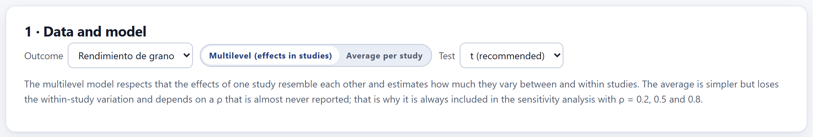
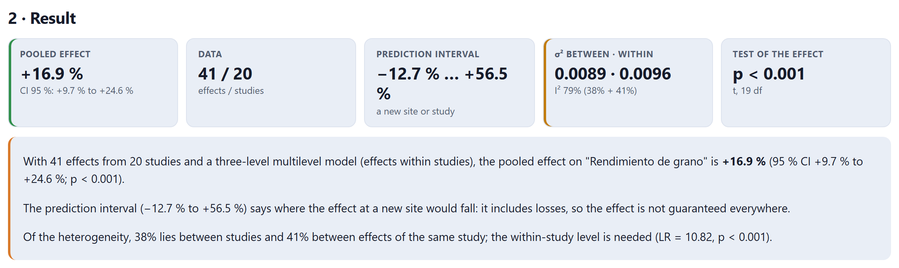
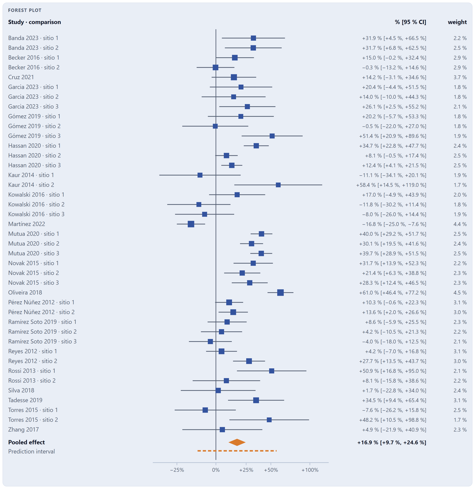
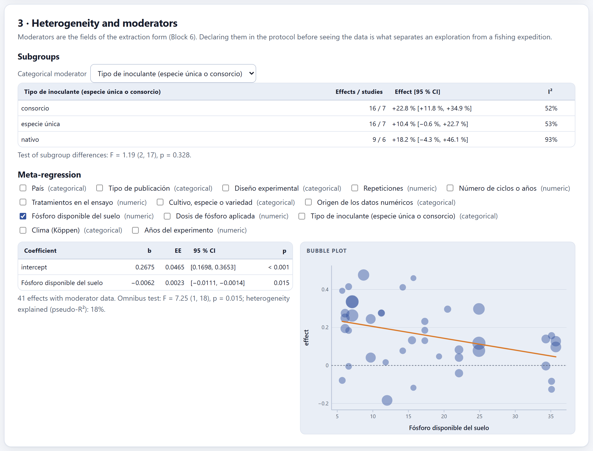
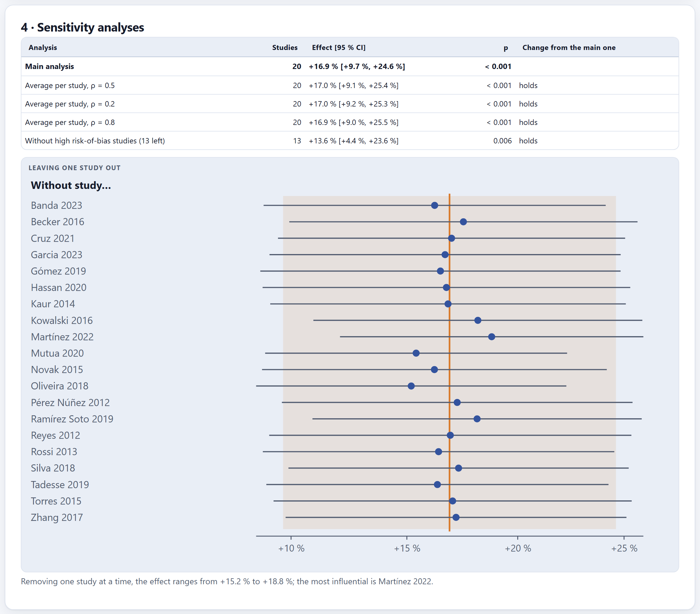
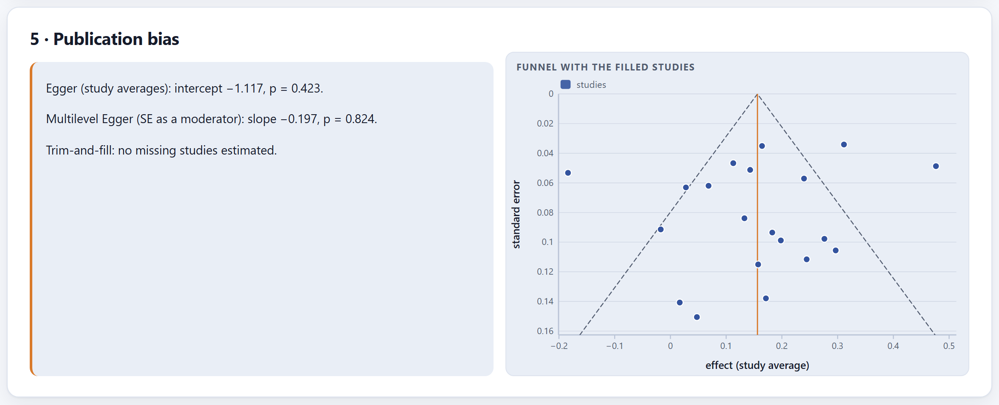
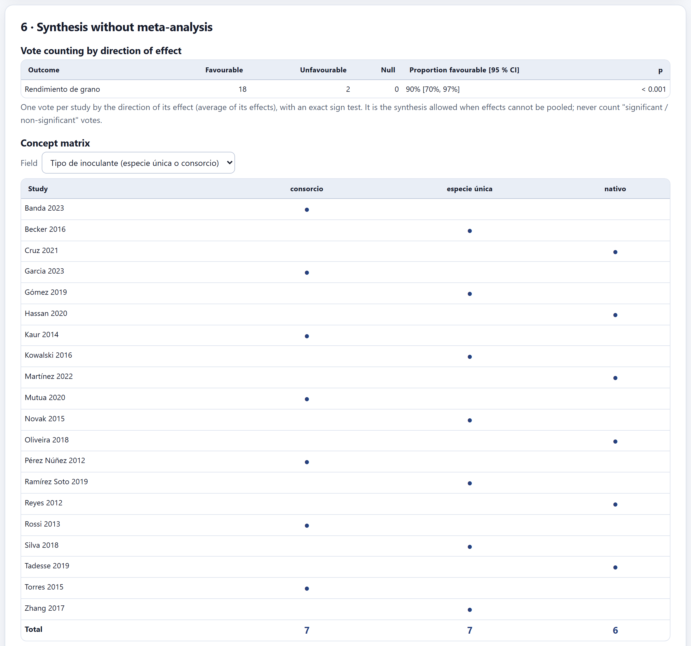
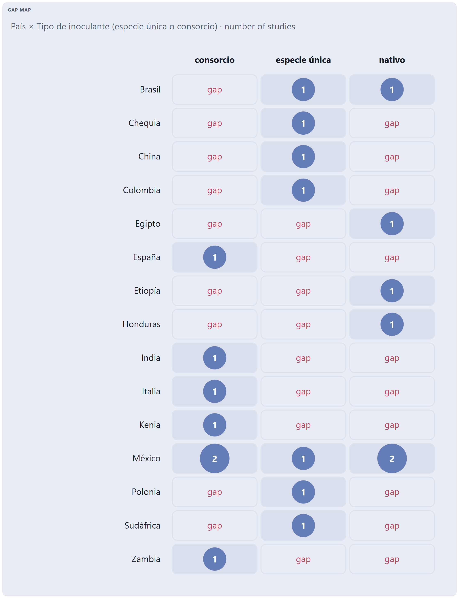
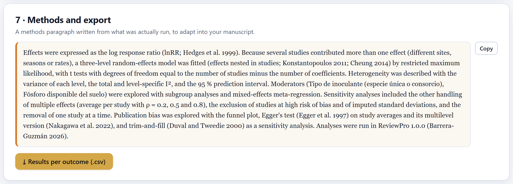

The meta-analysis of each outcome from the effects table of Block 6: a multilevel model for studies that contribute several effects (or the average per study), heterogeneity with its prediction interval, moderators in subgroups and meta-regression, sensitivity analyses and publication bias. For reviews that do not pool effects: vote counting by direction, the concept matrix and the evidence gap map. And a methods paragraph written from what was actually run.

You work with one outcome at a time: the menu lists those that have effects in Block 6. In agronomic experiments a study almost always contributes several effects—sites, seasons, rates—that resemble each other more than they resemble those of other studies. There are two ways of handling them:
| Multilevel (effects in studies) (default) | A three-level random-effects model—the sampling error of each effect, the variation between effects of the same study and the variation between studies—fitted by restricted maximum likelihood (Konstantopoulos 2011; Cheung 2014). It uses every effect and tells you how much heterogeneity there is at each level. |
| Average per study | Averages the effects of each study assuming a correlation ρ between them (Borenstein et al. 2009) and pools the averages with the classic random-effects model, with the τ² estimator of your choice (REML, DerSimonian–Laird, Paule–Mandel, Hedges or ML). The ρ slider appears. |
The t Test (recommended) uses degrees of freedom equal to the number of studies minus the number of coefficients, like the Knapp and Hartung (2003) adjustment: with few studies its intervals are honest; the z test makes them too narrow.
If the three sites of a study enter as three independent studies, that study weighs three times as much and the confidence interval narrows as if there were more evidence than there is. The multilevel model shares the study’s weight among its effects. The average also avoids the problem, but it loses the within-study variation and depends on a ρ that is almost never reported; that is why the app always runs it in the sensitivity analysis with ρ = 0.2, 0.5 and 0.8.

| Figure | What it says |
|---|---|
| Pooled effect | The mean effect with its 95% CI; with the response ratio, as a percentage change. |
| Data | Effects / studies. |
| Prediction interval | Where the true effect of a new site or study would fall (Higgins et al. 2009). |
| σ² between · within | The between-study variance and the variance between effects of the same study, with the total I² and its split by level. |
| Test of the effect | The p value, with the statistic and its degrees of freedom. |
Below, the app reads the result in words: the effect with its interval, what the prediction interval says (“it includes losses, so the effect is not guaranteed everywhere”), and how the heterogeneity is split, with the likelihood-ratio test that the within-study level is needed.

In the forest plot, the size of each square is its weight in the multilevel model: the effects of a study with many sites weigh less each than a lone effect of the same precision, because they share their study’s weight. The axis is on the scale of the analysis (logarithmic for lnRR) with labels in percent.
| If the CI excludes zero and so does the prediction interval | then the effect is consistent: it is expected at almost any site. |
| If the CI excludes zero but the prediction interval includes it | then it works on average, but not everywhere: look for the moderators that explain where it does (this is the case in the example). |
| If the CI includes zero | then there is no evidence of a mean effect; that is not the same as evidence that there is no effect. |
| If almost all the heterogeneity lies within studies | then the effect changes from one site or season to another more than from one study to another: local conditions rule. |

The moderators are the fields of the extraction form. Declaring them in the protocol before seeing the data is what separates an exploration from a fishing expedition.
The slope is −0.0062 per mg/kg of available phosphorus (95% CI −0.0111 to −0.0014; p = 0.015): at 5 mg/kg the estimated response is about +27%, and at 35 mg/kg, +5%. Phosphorus explains 18% of the heterogeneity. This is what the protocol’s hypothesis predicted, and that is why it counts as a confirmatory result and not as a fishing find.
A moderator compares studies, not randomly assigned plots: soil phosphorus may go hand in hand with climate, cultivar or management. An association between studies is a hypothesis for an experiment, not the demonstration of a cause. With few studies per level or many moderators at once, the results become unstable.

The table repeats the analysis with different decisions and says, against the main one, whether the result holds, significance changes or it changes sign: the other handling of multiple effects (the average per study with ρ = 0.2, 0.5 and 0.8, or the multilevel model if the main one is the average), without the high risk-of-bias studies of Block 7, without the imputed standard deviations of Block 6 and, with the average, with the DerSimonian–Laird estimator. The leave-one-study-out plot repeats the analysis without each study and names the most influential one.

Three tools, on the study averages or on all the effects: Egger’s test (Egger et al. 1997) with the averages; its multilevel version, with the standard error as a moderator (Nakagawa et al. 2022); and trim-and-fill (Duval and Tweedie 2000), which estimates how many studies would be missing for the funnel to be symmetric, draws them in the funnel and gives the adjusted effect. The latter is a sensitivity analysis, not a correction.
| If there are fewer than 10 studies | then the tests have very little power: the app shows them as a reference, not as a conclusion. |
| If the standard errors barely vary | then the app warns that the tests are not informative; with lnRR, the variance depends on the effect and can create a spurious slope. |
| If there is asymmetry | then it may be publication bias, but also real heterogeneity (small studies are run under other conditions); check whether a moderator explains it. |
When the effects cannot be pooled—incomparable measures, incomplete data, a scoping or narrative review—card 6 offers three tools from the SWiM guideline (Campbell et al. 2020).



The methods paragraph says which effect measure was used, which model and why, which test, how heterogeneity was described, which moderators were explored, which sensitivity analyses were run and how publication bias was explored, with the references of each method and the software version. It changes if you change the model or the moderators. It is a starting point for your manuscript: in Block 9 it is inserted with one click into the synthesis section, and its references enter the list on their own. ⤓ Results per outcome (.csv) downloads the effect, its SE, CI, p, prediction interval, variances and I² for each outcome.
“There are not enough data for this outcome. Extract the effects in Block 6”; “At least two subgroups with data are needed”; “There are not enough effects with data for those moderators”; those about few studies or similar precisions in publication bias; and those of the matrix and the map when the chosen field has no values.